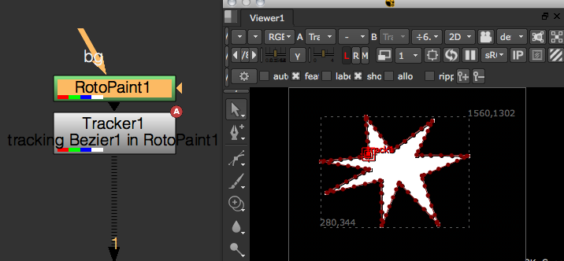
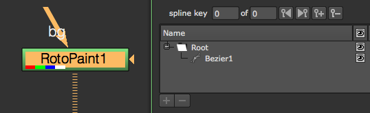

Roto and RotoPaint¶
How to access and create roto shapes and paint strokes.
When getting or setting shapes in the Roto or RotoPaint node, you need access to the node’s curves knob:
rpNode = nuke.toNode('RotoPaint1')
cKnob= rpNode['curves']
Access the root layer as follows:
root = cKnob.rootLayer
Each layer in the curves knob is an iterator object that yields the members of that layer:
for shape in root:
print shape.name
Use the curve knob’s toElement method to access a layer by name:
for shape in cKnob.toElement('Layer1'):
print shape.name
To access the control points in a shape or stroke you can use the same methodology:
for p in cKnob.toElement('Layer1/Brush1'):
print p
There are three types of objects in the curve knob:
- Shapes - Describes Beziers and B-splines.
- Strokes - Describes paint strokes.
- Layers - Describes the different layers.
To create new strokes and layers you need to import the RotoPaint API from the NUKE module. It’s handy to shorten the name during import to something easier to type, for example:
import nuke.rotopaint as rp
In here are the classes for Shape, Stroke, Layer, ShapeControlPoint, AnimControlPoints, and many more that may be required to create RotoPaint elements using Python.
Examples¶
Also see:
paintTrajectory¶
This script visualizes an Array_Knob’s animation path by painting a stroke along it’s trajectory.
To prepare, set some keyframes on a Transform node’s translate knob so it moves around the screen. In the script editor, assign the knob to a variable and assign a frame range (let’s just use 1-100 for now):
knob = nuke.toNode('Transform1')['translate']
frameRange = nuke.FrameRange('1-100')
We need to make sure the knob for this is has at least two fields to provide x and y values, so let’s put in a quick check:
if knob.arraySize() != 2:
raise TypeError, 'knob must have array size of 2'
If the knob is valid, let’s grab its parent node (so we can reference it a little later), create a RotoPaint node, and reference it’s curves knob (the knob that holds all shapes):
parentNode = knob.node()
paintNode = nuke.createNode('RotoPaint')
curvesKnob = paintNode['curves']
We will need the nuke.rotopaint module for this example, and to avoid having to type it’s full name all the time, let’s import it as simply rp:
import nuke.rotopaint as rp
Note
For semantic reasons, this line should go at the very top of the code.
Create a new paint stroke using the Stroke class in the rotopaint module:
stroke = rp.Stroke(curvesKnob)
Next, loop through the requested frames and grab the knob’s value at each frame:
for f in frameRange:
pos = knob.valueAt(f)
If the knob’s parent node has a center knob, you may want to offset it by that value to make sure the paint stroke sits exactly on top of the trajectory. To get the respective offset:
try :
offset = parentNode['center'].valueAt(f)
except NameError:
offset = (0, 0)
Calculate the actual x and y position for the stroke’s new control point:
finalPos = [ sum(p) for p in zip(pos, offset) ]
Use the rotopaint module’s AnimControlPoint class to create a new control point and assign the calculated x and y position as arguments. Then append the new control point to the new stroke:
stroke.append(rp.AnimControlPoint(*finalPos))
Then give the stroke a descriptive name that shows up in the curves knob, and finally, add it to the root layer in the list of shapes:
stroke.name = 'trajectory for %s.%s' %(parentNode.name(), knob.name())
curvesKnob.rootLayer.append(stroke)
This is the code so far:
import nuke.rotopaint as rp
knob = nuke.toNode('Transform1')['translate']
frameRange = nuke.FrameRange('1-100')
if knob.arraySize() != 2:
raise TypeError, 'knob must have array size of 2'
parentNode = knob.node()
paintNode = nuke.createNode('RotoPaint')
curvesKnob = paintNode['curves']
stroke = rp.Stroke(curvesKnob)
for f in frameRange:
pos = knob.valueAt(f)
try :
# IF PARENT NODE HAS "CENTER" KNOB ADD THE OFFSET TO LINE UP STROKE PROPERLY
offset = parentNode['center'].valueAt(f)
except NameError:
# OTHERWISE NO OFFSET IS APPLIED
offset =(0, 0)
finalPos = [ sum(p) for p in zip(pos, offset) ]
stroke.append(rp.AnimControlPoint(*finalPos))
stroke.name = 'trajectory for %s.%s' %(parentNode.name(), knob.name())
curvesKnob.rootLayer.append(stroke)
A good place for this code would be in the animation menu so it can be called directly from the respective knob’s animation menu. To do this, let’s wrap the code into a function that takes the knob and frame range as arguments:
def paintTrajectory(knob, frameRange):
if knob.arraySize() != 2:
raise TypeError, 'knob must have array size of 2'
parentNode = knob.node()
paintNode = nuke.createNode('RotoPaint')
curvesKnob = paintNode['curves']
stroke = rp.Stroke(curvesKnob)
ctrlPoints = []
for f in frameRange:
pos = knob.valueAt(f)
try :
# IF PARENT NODE HAS "CENTER" KNOB ADD THE OFFSET TO LINE UP STROKE PROPERLY
offset = parentNode['center'].valueAt(f)
except NameError:
# OTHERWISE NO OFFSET IS APPLIED
offset =(0, 0)
finalPos = [ sum(p) for p in zip(pos, offset) ]
stroke.append(rp.AnimControlPoint(*finalPos))
stroke.name = 'trajectory for %s.%s' %(parentNode.name(), knob.name())
curvesKnob.rootLayer.append(stroke)
Now create a helper function that tries to get the required frame range from the knob in question, that way we don’t have to ask the user for manual input. We do this by looping through the knob’s animation curves and retrieving their frame range. First initialize a FrameRanges object that holds all the knob’s frame ranges:
def getKnobRange(knob):
allRanges = nuke.FrameRanges()
Next, loop through the curves and create a frame range object with the respective first and last frame. If no keyframes are found the curve is probably defined by an expression, in which case we just use the script’s range. Once we have the first and last frame, we create a frame range object and append it to the list of frame ranges we initialized above:
for anim in knob.animations():
if not anim.keys():
first = nuke.root().firstFrame()
last = nuke.root().lastFrame()
allRanges.add(nuke.FrameRange(first, last))
allKeys = anim.keys()
allRanges.add(nuke.FrameRange( allKeys[0].x, allKeys[-1].x, 1))
Once all ranges are collected, we can use FrameRanges.minFrame() and FrameRanges.maxFrame() to get the smallest and largest frame respectively and return one overall FrameRange object:
return nuke.FrameRange(allRanges.minFrame(), allRanges.maxFrame(), 1)
Here is the final code:
import nuke
import nuke.rotopaint as rp
def getKnobRange( knob ):
'''
Return a frame range object of the knob's animation range.
If the knob has no keyframes the script range is returned
args:
knob - animated knob
'''
allRanges = nuke.FrameRanges()
for anim in knob.animations():
if not anim.keys():
#KNOB ONLY HAS EXPRESSION WITHOUT KEYS SO USE SCRIPT RANGE
first = nuke.root().firstFrame()
last = nuke.root().lastFrame()
allRanges.add( nuke.FrameRange( first, last ) )
else:
# GET FIRST FRAME
allKeys = anim.keys()
allRanges.add( nuke.FrameRange( allKeys[0].x, allKeys[-1].x, 1 ) )
return nuke.FrameRange( allRanges.minFrame(), allRanges.maxFrame(), 1 )
def paintTrajectory( knob, frameRange ):
'''
Create a paint stroke that visualises a knob's animation path
args:
knob - Array knob with 2 fields. Presumably this is a XY_Knob but can be any
frameRange - Range for which to draw the trajectory.
This is an iterable object containing the requested frames.
Default is current script range
'''
if knob.arraySize() != 2:
raise TypeError, 'knob must have array size of 2'
parentNode = knob.node()
paintNode = nuke.createNode('RotoPaint')
curvesKnob = paintNode['curves']
stroke = rp.Stroke( curvesKnob )
ctrlPoints = []
for f in frameRange:
pos = knob.valueAt( f )
try :
# IF PARENT NODE HAS "CENTER" KNOB ADD THE OFFSET TO LINE UP STROKE PROPERLY
offset = parentNode['center'].valueAt( f )
except NameError:
# OTHERWISE NO OFFSET IS APPLIED
offset = ( 0, 0 )
finalPos = [ sum(p) for p in zip( pos, offset ) ]
stroke.append( rp.AnimControlPoint( *finalPos ) )
stroke.name = 'trajectory for %s.%s' % ( parentNode.name(), knob.name() )
curvesKnob.rootLayer.append( stroke )
With these two functions at the ready, you can now run something like this to paint an animation path:
knob = nuke.toNode('Transform1')['translate']
paintTrajectory(knob, getKnobRange(knob))
As mentioned above, a good place for this is in NUKE’s animation menu. Any code run from inside the animation menu can use nuke.thisKnob() to reference the knob who’s animation menu is used. The lines below assume the code is part of the examples package and creates a new entry in the animation menu to run it on the respective knob:
import examples
nuke.menu('Animation').addCommand('Paint Trajectory', lambda: examples.paintTrajectory(nuke.thisKnob(), examples.getKnobRange(nuke.thisKnob())))
trackShape¶
This script creates a Tracker node that travels along a roto shape or paint stroke.
First import the rotopaint module from nukescripts. Again, import it as rp to save time:
import nuke.rotopaint as rp
Then create a RotoPaint node and draw a Bezier shape.
Now run the following lines to reference the node and the name of the shape you created:
node = nuke.toNode('RotoPaint1')
shapeName = 'Bezier1'
The curves knob holds all shapes so get that, then grab the shape object by name so we can work with it:
curveKnob = node['curves']
shape = curveKnob.toElement(shapeName)
To get to the actual cubic curve in the shape’s objects, we need to use the evaluate() method on it:
cubicCurve = shape.evaluate(0, nuke.frame())
The arguments to the evaluate() method are the index of the curve you’re after and the frame you want to evaluate the curve on. Index 0 gets you the main shape and index 1 gets you the feather shape. You can also evaluate paint strokes this way, but since there is no feather shape on paint strokes, you’d only use the frame argument. Make sure we can evaluate both shapes and strokes:
if isinstance(shape, rp.Stroke):
cubicCurve = shape.evaluate(nuke.frame())
elif isinstance(shape, rp.Shape):
cubicCurve = shape.evaluate(0, nuke.frame())
The resulting cubic curve retrieves an x/y position anywhere along its path which we’ll use a bit later.
Next, we need a frame range to operate on, so let’s prompt the user:
fRange = nuke.FrameRange(nuke.getInput('Track Range', '%s-%s' % (nuke.root().firstFrame(), nuke.root().lastFrame())))
Create a Tracker node to hold the resulting animation and give it a descriptive label:
tracker = nuke.createNode('Tracker3')
tracker['label'].setValue('tracking %s in %s' %(shape.name, node.name()))
Set the track1 knob to accept animation:
t = tracker['track1']
t.setAnimated()
Okay, we’re all set to do the tracking. Here’s the code so far:
import nuke.rotopaint as rp
node = nuke.toNode('RotoPaint1')
shapeName = 'Bezier1'
curveKnob = node['curves']
shape = curveKnob.toElement(shapeName)
if isinstance(shape, rp.Stroke):
# FOR PAINT STROKES WE JUST EVALUATE AS IS TO GET THE CURVE
cubicCurve = shape.evaluate(nuke.frame())
elif isinstance(shape, rp.Shape):
# FOR SHAPES WE EVALUATE INDEX "0" WHICH IS THE MAIN CURVE ("1" WOULD BE THE FEATHER CURVE)
cubicCurve = shape.evaluate(0, nuke.frame())
# ASK FOR THE DESIRED FRAME RANGE TO DISTRIBUTE THE RESULTING KEYFRAMES OVER
fRange = nuke.FrameRange(nuke.getInput('Track Range', '%s-%s' %(nuke.root().firstFrame(), nuke.root().lastFrame())))
# CREATE A TRACKER NODE TO HOLD THE DATA
tracker = nuke.createNode('Tracker3')
tracker['label'].setValue('tracking %s in %s' %(shape.name, node.name()))
t = tracker['track1']
t.setAnimated()
Depending on the shape and the requested frame range, tracking the shape may take a while. It’d be handy to see the tracker move across the shape as the script progresses, so let’s write a new function that does the actual tracking, then launch it as an extra thread. Define a progress bar in the function so that we get some visual feedback and the user can interrupt the script, if necessary:
def _pointsToKeys(curve, knob, fRange):
task = nuke.ProgressTask('Shape Tracker')
task.setMessage('tracking shape')
The arguments are:
- curve - The cubic curve that is the result of our previous evaluate() method.
- knob - The tracker knob that holds the animation.
- fRange - The frame range we want to track.
Start looping through the frame range and make sure the script quits if the user hits cancel in the progress bar:
for f in fRange:
if task.isCancelled():
nuke.executeInMainThread(nuke.message, args=("Shape Track Cancelled"))
break
We’re using nuke.executeInMainThread here because we plan on running this function as a separate thread.
Note
Do not run this function in the main thread, as the nuke.executeInMainThreadWithResult function freezes NUKE.
Based on the requested frame range, calculate the percentage of the current iteration. We use this for both the progress bar and for grabbing the position on the curve.
Now set the progress for the progress bar using the above percentage converted to an integer (to avoid warning messages):
task.setProgress(int(curvePos * 100))
Next, we get the x/y position on the curve. getPoint() allows you to extract an x/y position anywhere on the cubic curve by providing a percentage, where 0 is the beginning of the curve and 1 is the end:
curPoint = curve.getPoint(curvePos)
And finally, use the current value to set a key frame on the tracker knob in the main thread (this renders the tracker’s “travel” path):
nuke.executeInMainThreadWithResult(knob.setValueAt, args=(curPoint.x, f, 0))
nuke.executeInMainThreadWithResult(knob.setValueAt, args=(curPoint.y, f, 1))
The complete code for the function should now look something like this:
def _pointsToKeys(curve, knob, fRange):
task = nuke.ProgressTask('Shape Tracker')
task.setMessage('tracking shape')
for f in fRange:
# TAKE CARE OF PROGRESS BAR
if task.isCancelled():
nuke.executeInMainThread(nuke.message, args=("Shape Track Cancelled"))
break
curvePos = float(f)/fRange.last()
task.setProgress(int(curvePos * 100))
# DO THE WORK
curPoint = curve.getPoint(curvePos)
nuke.executeInMainThreadWithResult(knob.setValueAt, args=(curPoint.x, f, 0))
nuke.executeInMainThreadWithResult(knob.setValueAt, args=(curPoint.y, f, 1))
Now call this function in a separate thread at the end of the main code:
import nuke.rotopaint as rp
node = nuke.toNode('RotoPaint1')
shapeName = 'Bezier1'
curveKnob = node['curves']
shape = curveKnob.toElement(shapeName)
if isinstance(shape, rp.Stroke):
# FOR PAINT STROKES WE JUST EVALUATE AS IS TO GET THE CURVE
cubicCurve = shape.evaluate(nuke.frame())
elif isinstance(shape, rp.Shape):
# FOR SHAPES WE EVALUATE INDEX "0" WHICH IS THE MAIN CURVE ("1" WOULD BE THE FEATHER CURVE)
cubicCurve = shape.evaluate(0, nuke.frame())
# ASK FOR THE DESIRED FRAME RANGE TO DISTRIBUTE THE RESULTING KEYFRAMES OVER
fRange = nuke.FrameRange(nuke.getInput('Track Range', '%s-%s' %(nuke.root().firstFrame(), nuke.root().lastFrame())))
# CREATE A TRACKER NODE TO HOLD THE DATA
tracker = nuke.createNode('Tracker3')
tracker['label'].setValue('tracking %s in %s' %(shape.name, node.name()))
t = tracker['track1']
t.setAnimated()
threading.Thread(None, _pointsToKeys, args=(cubicCurve, t, fRange)).start()
Here is the complete code wrapped into a function so we can park it somewhere in the UI. It includes some error handling at the beginning to make sure the incoming node is either a Roto or a RotoPaint node. It also uses the ShapePanel to get the shape name from the user rather than hard coding a name:
import examples
import nuke.rotopaint as rp
import nuke
import threading
def _pointsToKeys( curve, knob, fRange ):
'''
Set keys along a shape.
args:
shape - CubicCurve to define animation path
knob - knob to set keys on. This needs to be an Array_Knob
fRange - frame range across which to set keys (first frame = start of shape, last frame = end of shape)
'''
task = nuke.ProgressTask( 'Shape Tracker' )
task.setMessage( 'tracking shape' )
for f in fRange:
# TAKE CARE OF PROGRESS BAR
if task.isCancelled():
nuke.executeInMainThread( nuke.message, args=( "Shape Track Cancelled" ) )
break
task.setProgress( int( float(f)/fRange.last() * 100 ) )
# DO THE WORK
curPoint = curve.getPoint( float( f )/fRange.last() )
nuke.executeInMainThreadWithResult( knob.setValueAt, args=(curPoint.x, f, 0) )
nuke.executeInMainThreadWithResult( knob.setValueAt, args=(curPoint.y, f, 1) )
def trackShape( node=None ):
'''
Turn a paint stroke or roto shape into an animation path.
args:
node - Roto or RotoPaint node that holds the required shape
'''
# IF NO NODE IS GIVEN, USE THE CURRENTLY SELECTED NODE
node = node or nuke.selectedNode()
# BAIL OUT IF THE NODE IS NOT WHAT WE NEED
if node.Class() not in ('Roto', 'RotoPaint'):
if nuke.GUI:
nuke.message( 'Unsupported node type. Node must be of class Roto or RotoPaint' )
raise TypeError, 'Unsupported node type. Node must be of class Roto or RotoPaint'
# GET THE KNOB THAT HOLDS ALL THE SHAPES AND POP UP A PANEL THAT LISTS STROKES AND SHAPES (NO LAYERS)
shPanel = examples.ShapePanel( nuke.selectedNode() )
if not shPanel.showModalDialog():
return
# GET SHAPE OBJECT BY NAME
shapeName = shPanel.elementKnob.value()
curveKnob = node['curves']
shape = curveKnob.toElement( shapeName )
if isinstance( shape, rp.Stroke ):
# FOR PAINT STROKES WE JUST EVALUATE AS IS TO GET THE CURVE
cubicCurve = shape.evaluate( nuke.frame() )
elif isinstance( shape, rp.Shape ):
# FOR SHAPES WE EVALUATE INDEX "0" WHICH IS THE MAIN CURVE ("1" WOULD BE THE FEATHER CURVE)
cubicCurve = shape.evaluate( 0, nuke.frame() )
# ASK FOR THE DESIRED FRAME RANGE TO DISTRIBUTE THE RESULTING KEYFRAMES OVER
fRange = nuke.FrameRange( nuke.getInput( 'Track Range', '%s-%s' % ( nuke.root().firstFrame(), nuke.root().lastFrame() ) ) )
# CREATE A TRACKER NODE TO HOLD THE DATA
tracker = nuke.createNode( 'Tracker3' )
tracker['label'].setValue( 'tracking %s in %s' % ( shape.name, node.name() ) )
t = tracker['track1']
t.setAnimated()
threading.Thread( None, _pointsToKeys, args=(cubicCurve, t, fRange) ).start()
To put this into the Properties panel right-click menu, put something like this into your menu.py:
import examples
nuke.menu('Properties').addCommand('Track Shape', examples.trackShape)
path Controller¶
This is basically a live version of the above trackShape. It uses Python code in a Transform node’s translate knob to link it to a given shape. Then a user knob is used to position the transform along the path.
The path knob controls the percentage that Transform1 travels along a stroke called Brush1 in the RotoPaint node. This is achieved by placing Python code in the translate knob as shown below:
In the x field:
try:
shape = nuke.toNode('RotoPaint1')['curves'].toElement('Brush1').evaluate(nuke.frame())
except:
pass
ret = shape.getPoint(nuke.thisNode()['path'].value()).x
In the y field:
try:
shape = nuke.toNode('RotoPaint1')['curves'].toElement('Brush1').evaluate(nuke.frame())
except:
pass
ret = shape.getPoint(nuke.thisNode()['path'].value()).y
The curve is evaluated to a cubic curve and the respective position is looked up.
Here is the nuke script
trackCV¶
This script creates a Tracker node for a shape’s control point. The first step is to create a Roto node and then draw and animate a Bezier spline in it.
Make sure the label points checkbox in the Viewer is selected so you can see the CVs point numbers - this helps identify the one we want to create a Tracker for.
Make sure the Roto node is selected in the Node Graph (DAG), then start the script by grabbing the selected node:
node = nuke.selectedNode()
Also, define the frame range we want to track, the shape’s name, and the point number in questions. Hard code these values for now, later on we can add a panel to provide this info:
fRange = nuke.FrameRange('1-100')
shapeName = 'Bezier1'
cv = 0
We want to see the tracker being generated as the script progresses, so run the function that does the work in an extra thread. The function is called cvTracker and it’s arguments are:
- node - The Roto node.
- shapeName - The name of the shape containing the control point.
- cvID - The number of the control point to track.
- fRange - The frame range to track.
Append the line that calls the function as a threaded process:
threading.Thread(None, _cvTracker, args=(node, shapeName, cv, fRange)).start()
So this is what we have so far:
import nuke.rotopaint as rp
node = nuke.selectedNode()
fRange = nuke.FrameRange('1-100')
shapeName = 'Bezier1'
cv = 0
threading.Thread(None, _cvTracker, args=(node, shapeName, cv, fRange)).start()
Now let’s write the function that does the work:
def _cvTracker(node, shapeName, cvID, fRange):
shape = node['curves'].toElement(shapeName)
Using the toElement method, we can get the shape object by name and proceed to referencing the point we are after, in this example, point number 0:
shapePoint = shape[cvID]
Let’s add some error handling in case the requested point number doesn’t exist in the given shape:
try:
shapePoint = shape[cvID]
except IndexError:
nuke.message('Index %s not found in %s.%s' %())
return
The ShapeControlPoint we now hold in the variable shapePoint holds all the properties, such as tangents and center, for both the main and feather curves. We just want to track the center of the main curve’s CV, so grab that:
animPoint = shapePoint.center
The animPoint provides us with the x/y coordinates, so now we want to create a Tracker node to hold the animation:
tracker = nuke.createNode('Tracker3')
Assign a descriptive label and set the track1 knob to accept animation:
tracker['label'].setValue('tracking cv#%s in %s.%s' %(cvID, node.name(), shape.name))
trackerKnob = tracker['track1']
trackerKnob.setAnimated()
Before we do the tracking, set up a task bar to see what’s going on and to allow the user to cancel the process:
task = nuke.ProgressTask('CV Tracker')
task.setMessage('tracking CV')
Now loop through the requested frame range. Inside the loop we do a quick check to determine if the user hit Cancel in the progress bar:
for f in fRange:
if task.isCancelled():
nuke.executeInMainThread(nuke.message, args=("CV Track Cancelled"))
break
Next set the task bar’s progress so we know how far away we are from the completion of the script:
task.setProgress(int(float(f)/fRange.last() * 100))
Now do the actual tracking. Get the AnimationControlPoint‘s position for the respective frame in the range we are iterating over:
pos = animPoint.getPosition(f)
And finally, set the tracker knob to the new position. We do this in the main thread so we can see the keyframes being generated as the script runs:
nuke.executeInMainThreadWithResult(trackerKnob.setValueAt, args=(pos.x, f, 0)) # SET X VALUE
nuke.executeInMainThreadWithResult(trackerKnob.setValueAt, args=(pos.y, f, 1)) # SET Y VALUE
The entire function now looks like this:
def _cvTracker(node, shapeName, cvID, fRange):
shape = node['curves'].toElement(shapeName)
# SHAPE CONTROL POINT
try:
shapePoint = shape[cvID]
except IndexError:
nuke.message('Index %s not found in %s.%s' %())
return
# ANIM CONTROL POINT
animPoint = shapePoint.center
# CREATE A TRACKER NODE TO HOLD THE DATA
tracker = nuke.createNode('Tracker3')
tracker['label'].setValue('tracking cv#%s in %s.%s' %(cvID, node.name(), shape.name))
trackerKnob = tracker['track1']
trackerKnob.setAnimated()
# SET UP PROGRESS BAR
task = nuke.ProgressTask('CV Tracker')
task.setMessage('tracking CV')
# DO THE WORK
for f in fRange:
if task.isCancelled():
nuke.executeInMainThread(nuke.message, args=("CV Track Cancelled"))
break
task.setProgress(int(float(f)/fRange.last() * 100))
# GET POSITION
pos = animPoint.getPosition(f)
nuke.executeInMainThreadWithResult(trackerKnob.setValueAt, args=(pos.x, f, 0))
nuke.executeInMainThreadWithResult(trackerKnob.setValueAt, args=(pos.y, f, 1))
Note
Do not run this function in the main thread, as the nuke.executeInMainThreadWithResult function freezes NUKE.
To make this whole script user friendly, let’s use a little Python panel to provide the shape name, point number, and frame range.

See ShapeAndCVPanel for details on how to write this panel. Make sure to import the module the panel code lives in (if applicable) and modify the main code of our tool to use the panel’s values, rather than hard coding shape name, point number, and frame range:
import examples
node = nuke.selectedNode()
p = examples.ShapeAndCVPanel(node)
if p.showModalDialog():
fRange = nuke.FrameRange(p.fRange.value())
shapeName = p.shape.value()
cv = p.cv.value()
threading.Thread(None, _cvTracker, args=(node, shapeName, cv, fRange)).start()
Now wrap up the code into a function we can place in the Properties panel’s right-click menu. We’ll also add some error handling to make sure the selected node is either a Roto or a RotoPaint node:
def trackCV():
node = nuke.selectedNode()
# BAIL OUT IF THE NODE IS NOT WHAT WE NEED
if node.Class() not in ('Roto', 'RotoPaint'):
nuke.message('Unsupported node type. Node must be of class Roto or RotoPaint')
return
p = examples.ShapeAndCVPanel(node)
if p.showModalDialog():
fRange = nuke.FrameRange(p.fRange.value())
shapeName = p.shape.value()
cv = p.cv.value()
threading.Thread(None, _cvTracker, args=(node, shapeName, cv, fRange)).start()
The finished code with all the required import statements:
import examples
import nuke
import nukescripts
import threading
def _cvTracker( node, shapeName, cvID, fRange ):
shape = node['curves'].toElement( shapeName )
# SHAPE CONTROL POINT
try:
shapePoint = shape[cvID]
except IndexError:
nuke.message( 'Index %s not found in %s.%s' % ( ) )
return
# ANIM CONTROL POINT
animPoint = shapePoint.center
# CREATE A TRACKER NODE TO HOLD THE DATA
tracker = nuke.createNode( 'Tracker3' )
tracker['label'].setValue( 'tracking cv#%s in %s.%s' % ( cvID, node.name(), shape.name ) )
trackerKnob = tracker['track1']
trackerKnob.setAnimated()
# SET UP PROGRESS BAR
task = nuke.ProgressTask( 'CV Tracker' )
task.setMessage( 'tracking CV' )
# DO THE WORK
for f in fRange:
if task.isCancelled():
nuke.executeInMainThread( nuke.message, args=( "CV Track Cancelled" ) )
break
task.setProgress( int( float(f)/fRange.last() * 100 ) )
# GET POSITION
pos = animPoint.getPosition( f )
nuke.executeInMainThreadWithResult( trackerKnob.setValueAt, args=( pos.x, f, 0 ) ) # SET X VALUE
nuke.executeInMainThreadWithResult( trackerKnob.setValueAt, args=( pos.y, f, 1 ) ) # SET Y VALUE
def trackCV():
# GET THE SELECTED NODE. SINCE WE PLAN ON CALLING THIS FROM THE PROPERTIES MENU
# WE CAN BE SURE THAT THE SELECTED NODE IS ALWAYS THE ONE THE USER CLICKED IN
node = nuke.selectedNode()
# BAIL OUT IF THE NODE IS NOT WHAT WE NEED
if node.Class() not in ('Roto', 'RotoPaint'):
nuke.message( 'Unsupported node type. Node must be of class Roto or RotoPaint' )
return
p = examples.ShapeAndCVPanel( node )
if p.showModalDialog():
fRange = nuke.FrameRange( p.fRange.value() )
shapeName = p.shape.value()
cv = p.cv.value()
threading.Thread( None, _cvTracker, args=(node, shapeName, cv, fRange) ).start()
Here is the code to place it in the Properties right-click menu:
nuke.menu('Properties').addCommand('Track CV', examples.trackCV)